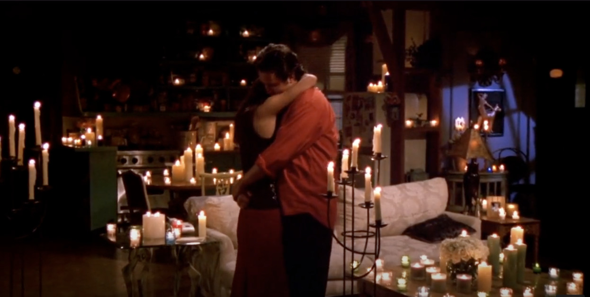

日常#2
邻居的求婚、老爸的手机
{kind=link}

邻居计划求婚，因为他对象说过需要求婚的仪式，之前回家聊天时他说过一嘴，于是到了日子就回来帮帮忙，布置一下以及帮他拍摄。
当天十点才开始准备，去到了先布置挂在天花的灯带，我们都不知道怎么布置好看，最后挂成了低垂的多个 U 字，在下垂的灯带上放了些他们的照片。
照片不是很多，二十来张，但看着照片里笑得灿烂的两人，也是能感受到他们那一刻的开心。
每张照片都是一段回忆，日常生活也好，出门远游也好，还是要多拍点照片，留作纪念，要是打印出来就更好。
过了会儿，邻居的四个大学同学也来了，一起琢磨怎么做那个立体的爱心气球，虽然有教程，但看起来也是挺麻烦的，中午之前只把需要的气球打了气。
之后我回家了个午饭，睡了一阵子，昨晚没睡好，有些困。
起来再去邻居家，邻居已经出门找女朋友了，剩下他几个大学同学还在布置，去到时爱心气球也都拼接的差不多了，挂在墙上调整着位置。
果然是众人拾柴火焰高，那个看起来麻烦的气球，在他们的努力下看起来还不错，有模有样。
接着把礼物盒，MARRY ME 的灯牌，蜡烛，假花等都布置了一下，剩下时间都在打气球装饰地面，尽管有电动打气机，但把气球绑起来也很费劲，甚至会把手指的皮都磨掉，气球打够了，再把房间收拾干净，基本就布置完了。
大家还想找一下 BGM，我觉得方大同的 Wonderful Tonight 蛮合适的，不过后来翻到邻居自己有准备歌单，我们就不费劲了。
其实这些音乐更多是我们几个布置的人听，主角在入场时，大家一阵喧闹，也没人会仔细听 BGM 是什么，有些背景音就够了。
之后就是等待了，邻居也没有告诉我们太细致的安排，他可能也忙着招呼他的对象，信息回的没那么及时，我们也不太确定他什么时候到。
等待间隙，把送给邻居的蜡烛香薰拿出来点了，想让房间有一些香味，增添一些氛围，而不是气球的橡胶味。
买的是「宇宙的猜想」的「新生」，觉得求婚成功，基本确定要结婚，也算是一种新生，一个新的开始。香薰的味道闻着还可以，味道相对较淡。
但是点了之后我又很担心，房间里这么多气球，如果一个不小心点燃了，搞不好就是火灾，一直担心地看着，中间我一度把香薰熄灭了，但其他人觉得还是点着更好，便又点燃，所幸最后没出事故。
中间几次有人开门进来，但都是一些邻居的朋友或家人，好不容易终于等到了主角入场。
大家纷纷给他俩送花，我则拿着 Pocket 录像，邻居把桌子上的一束花送给他对象，两人来到爱心蜡烛的中间，邻居便开始了他的求婚告白，告白朴实但真挚，成功给对象戴上了钻戒，大功告成。
大家起哄让他俩亲亲抱抱，之后大家都上去合影，求婚也算是结束了。后续大家则相约去吃饭，我家里做了饭，晚点还要回深圳，就没一起去了。
恭喜邻居求得美人归，邻居对象也一直笑着，想必也是蛮开心的吧。而我也看得蛮感动的，为他俩感到高兴，默默祝福他们。我不太习惯在这么多人面前表达自己，如果我求婚，会更倾向于两个人独处时进行。
顺便分享两个让我印象深刻的求婚片段：
Chandler propose Monica (s6e25)
You make me happier than I ever thought I could be.
And if you'll let me, I'll spend the rest of my life trying to make you feel the same way.
- A Sleepy Proposal - About Time | RomComs
老爸的手机出现问题了，屏幕上出现一条紫色的线，用倒是还能用，但使用起来多少也是有点影响。
父母他们都是不太舍得花钱买手机的人，手机即使有问题，可能也会凑合用。
从我工作以来，父母的手机基本都是我买的。
刚开始的时候，我会有一种成见，觉得长辈不怎么接触互联网，也不太会用那么多手机的功能，他们不需要那么高端的手机，一个便宜的安卓手机凑合用就是了。
所以早些时候买的手机都是红米或着小米青春版之类的，配置看起来也还可以，价格也比较便宜，往往在 2000 左右，可能更低。
两年前，老妈的手机变得很卡，一方面可能是安装了不少应用，这也是国内安卓手机的一个毛病，如果不注意，就会不经意间安装很多垃圾软件。
另一方面也是手机性能确实不行，给她换手机之后，我把她的旧手机格式化做测试机，测试小程序、H5 等在安卓手机上的表现，虽然我没装什么应用，使用起来也是挺卡的，可能是现在的应用比较吃性能吧。
这次我给她换的是小米 13，当时卖也要 4000 多，前阵子我用了一下她的手机，发现还是很流畅，比我 2019 年买的 iPhone 11 流畅多了。她用的挺开心的，会在亲戚间说我给她买了一个很贵的手机，现在也没听她抱怨过卡了。
但出现过一次存储不足，还是各种应用占据太多空间了，加上我妈喜欢拍照拍视频，也不会转移数据到电脑上，后来她删除了不少照片和应用，总算没问题了，等下次再给她换，还是换一个存储足够大的。
上次给老爸买的手机是红米的 K50，也要 2900，是当时刚出的机子。
这次给他换了小米 14，虽然也是两年前的机子了，但作为旗舰，性能应该还是足够的，而且叠加国补之后只要 2500 多，比之前买 K50 还便宜，性价比是相当高了，应该够他用好一阵子了。
给自己买手机总是会选最好的，给父母买手机为什么要退而求其次呢。
便宜的手机虽然便宜，但往往用一段时间就性能不够，尽管再换一台可能也花不了太多钱；而价格高一些的旗舰，虽然价格贵，但只要不是物理损坏，一般也能用很长一段时间。
说起来我的手机也 6 年没换了，背壳已经摔得稀烂（纹路倒也好看），日常使用倒也没啥问题，存储还很多没用，只是现在也会不时出现卡顿，尤其是相机和微信。
也考虑过换手机，但 1.不想花大笔钱； 2.现在的手机也没有什么吸引我的地方，我很想要一台轻盈的小手机，可惜没什么厂商在做；1 3.手机卡，说不定就不会老想着玩，一定程度上或许能少玩点；就先继续用着吧。